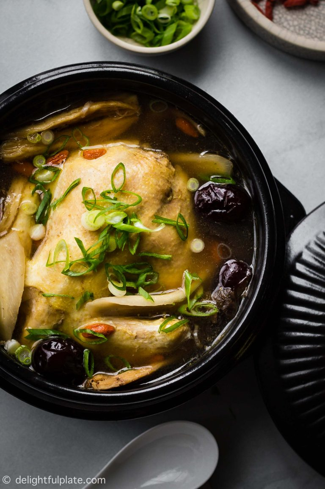

Chinese Chicken Herbal Soup
Source: Taken from
here

This Chinese soup dish is known for its clean, savority flavors, perfectly
complemented by the mix of herbs it is stewed with.
Description
Chinese Herbal Chicken Soup is the ultimate soul food for Chinese people.
Being savory, but not overly salty, not too decadent or heavy, it is
perfect for a pick-me-up, whether for a hangover, or as a meal when you
are sick, the smooth flavors with subtle sweet and earthy undertones from
the herbal additions are perfectly soothing when you need it the most.
Ingredients
- 1 small free-range chicken or Cornish hen
- 0.7 oz astragalus roots
- 0.7 oz dried Chinese yams
- 0.4 oz angelica sinensis
- 0.3 oz goji berries
- 4-8 red dates
- 2 1/2 cups fresh young coconut juice
- 1 1/2 cups water
- 1 1/2 teaspoons salt
- 2-inch piece of ginger
- 5 large garlic cloves, peeled
- Scallions, thinly sliced
Directions
-
Rinse all herbs (astragalus roots, dried Chinese yams, angelica
sinensis, goji berries and red dates) under water to remove dirt. Soak
in water for 5-10 minutes, then drain and set aside.
-
Rub chicken/ cornish hen with a lot of salt and rinse under water to
clean it. Or you can parboil it in boiling water for 1-2 minutes.
-
In a clean pot, add cornish hen, ginger, garlic, coconut juice and
water. Bring to a boil and skim off any foam. Reduce heat to a simmer
and add all the medicinal herbs and 1 1/2 teaspoons of salt (or to
taste).
-
Gently simmer for 40-45 minutes, or to desired strength of the soup and
tenderness of the chicken.
- Serve hot and garnish with sliced scallions.
Back to menu